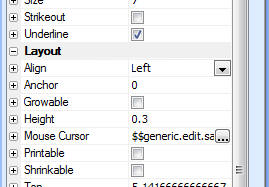

Form Layout - Mouse Cursor Property
You can now set a property for all objects on Form layout to control the mouse cursor when the mouse is over that object. The property can be set using the Dynamic Properties Pane. The property can also be dynamic - so that actual image used for the cursor can be dynamically computed.

The mouse cursor can be set to any internal Alpha Five image.
To set the mouse property of a textbox called 'text3' on the 'Invoice' form using Xbasic automation:
:invoice:text3.object.mouse_cursor = "$$application.alpha"